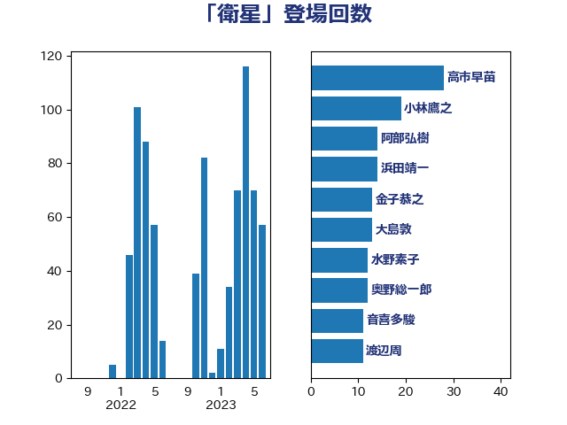

単語「衛星」

| 高市早苗 | 自由民主党 | 28 回 |
| 小林鷹之 | 自由民主党 | 19 回 |
| 阿部弘樹 | 日本維新の会 | 14 回 |
| 浜田靖一 | 自由民主党 | 14 回 |
| 金子恭之 | 自由民主党 | 13 回 |
| 大島敦 | 立憲民主党 | 13 回 |
| 水野素子 | 立憲民主党 | 12 回 |
| 奥野総一郎 | 立憲民主党 | 12 回 |
| 音喜多駿 | 日本維新の会 | 11 回 |
| 渡辺周 | 立憲民主党 | 11 回 |
| 平将明 | 自由民主党 | 11 回 |
| 岸田文雄 | 自由民主党 | 11 回 |
| 金城泰邦 | 公明党 | 10 回 |
| 西村康稔 | 自由民主党 | 10 回 |
| 大塚耕平 | 国民民主党 | 10 回 |
| 林芳正 | 自由民主党 | 8 回 |
| 斉藤鉄夫 | 公明党 | 8 回 |
| 鈴木敦 | 国民民主党 | 7 回 |
| 篠原豪 | 立憲民主党 | 7 回 |
| 小寺裕雄 | 自由民主党 | 7 回 |
| 山添拓 | 日本共産党 | 6 回 |
| 小西洋之 | 立憲民主党 | 6 回 |
| 三浦信祐 | 公明党 | 6 回 |
| 高木啓 | 自由民主党 | 5 回 |
| 道下大樹 | 立憲民主党 | 5 回 |
| 輿水恵一 | 公明党 | 5 回 |
| 榛葉賀津也 | 国民民主党 | 5 回 |
| 松本剛明 | 自由民主党 | 5 回 |
| 山岡達丸 | 立憲民主党 | 5 回 |
| 宮本岳志 | 日本共産党 | 5 回 |
| 城井崇 | 立憲民主党 | 5 回 |
| 佐藤正久 | 自由民主党 | 5 回 |
| 伊藤俊輔 | 立憲民主党 | 5 回 |
| 高良鉄美 | 無所属 | 4 回 |
| 野田国義 | 立憲民主党 | 4 回 |
| 野村哲郎 | 自由民主党 | 4 回 |
| 遠藤良太 | 日本維新の会 | 4 回 |
| 田村貴昭 | 日本共産党 | 4 回 |
| 末松義規 | 立憲民主党 | 4 回 |
| 小沢雅仁 | 立憲民主党 | 4 回 |
| 寺田稔 | 自由民主党 | 4 回 |
| 八木哲也 | 自由民主党 | 4 回 |
| 中川郁子 | 自由民主党 | 4 回 |
| 青柳仁士 | 日本維新の会 | 3 回 |
| 青山大人 | 立憲民主党 | 3 回 |
| 鈴木馨祐 | 自由民主党 | 3 回 |
| 鈴木英敬 | 自由民主党 | 3 回 |
| 西村明宏 | 自由民主党 | 3 回 |
| 西岡秀子 | 国民民主党 | 3 回 |
| 緒方林太郎 | 無所属 | 3 回 |
| 穀田恵二 | 日本共産党 | 3 回 |
| 福山哲郎 | 立憲民主党 | 3 回 |
| 浜田聡 | NHK党 | 3 回 |
| 津島淳 | 自由民主党 | 3 回 |
| 永岡桂子 | 自由民主党 | 3 回 |
| 松沢成文 | 日本維新の会 | 3 回 |
| 木村次郎 | 自由民主党 | 3 回 |
| 原口一博 | 立憲民主党 | 3 回 |
| 中谷真一 | 自由民主党 | 3 回 |
| 豊田俊郎 | 自由民主党 | 2 回 |
| 藤岡隆雄 | 立憲民主党 | 2 回 |
| 菅家一郎 | 自由民主党 | 2 回 |
| 若松謙維 | 公明党 | 2 回 |
| 柳本顕 | 自由民主党 | 2 回 |
| 市村浩一郎 | 日本維新の会 | 2 回 |
| 和田有一朗 | 日本維新の会 | 2 回 |
| 和田政宗 | 自由民主党 | 2 回 |
| 吉田宣弘 | 公明党 | 2 回 |
| 中川康洋 | 公明党 | 2 回 |
| 上田清司 | 国民民主党 | 2 回 |
| 鬼木誠 | 立憲民主党 | 1 回 |
| 高橋千鶴子 | 日本共産党 | 1 回 |
| 高橋はるみ | 自由民主党 | 1 回 |
| 阿達雅志 | 自由民主党 | 1 回 |
| 長浜博行 | 無所属 | 1 回 |
| 鈴木義弘 | 国民民主党 | 1 回 |
| 重徳和彦 | 立憲民主党 | 1 回 |
| 辻元清美 | 立憲民主党 | 1 回 |
| 赤羽一嘉 | 公明党 | 1 回 |
| 角田秀穂 | 公明党 | 1 回 |
| 西村智奈美 | 立憲民主党 | 1 回 |
| 藤巻健太 | 日本維新の会 | 1 回 |
| 萩生田光一 | 自由民主党 | 1 回 |
| 菊田真紀子 | 立憲民主党 | 1 回 |
| 羽田次郎 | 立憲民主党 | 1 回 |
| 笠井亮 | 日本共産党 | 1 回 |
| 福田昭夫 | 立憲民主党 | 1 回 |
| 神谷裕 | 立憲民主党 | 1 回 |
| 神津たけし | 立憲民主党 | 1 回 |
| 石破茂 | 自由民主党 | 1 回 |
| 石川香織 | 立憲民主党 | 1 回 |
| 玉木雄一郎 | 国民民主党 | 1 回 |
| 牧山ひろえ | 立憲民主党 | 1 回 |
| 片山大介 | 日本維新の会 | 1 回 |
| 渡辺創 | 立憲民主党 | 1 回 |
| 浮島智子 | 公明党 | 1 回 |
| 泉健太 | 立憲民主党 | 1 回 |
| 河西宏一 | 公明党 | 1 回 |
| 沢田良 | 日本維新の会 | 1 回 |
| 武井俊輔 | 自由民主党 | 1 回 |
| 森屋隆 | 立憲民主党 | 1 回 |
| 松野博一 | 自由民主党 | 1 回 |
| 松本尚 | 自由民主党 | 1 回 |
| 松下新平 | 自由民主党 | 1 回 |
| 杉尾秀哉 | 立憲民主党 | 1 回 |
| 有村治子 | 自由民主党 | 1 回 |
| 平木大作 | 公明党 | 1 回 |
| 川崎ひでと | 自由民主党 | 1 回 |
| 岬麻紀 | 日本維新の会 | 1 回 |
| 岩本剛人 | 自由民主党 | 1 回 |
| 岡田克也 | 立憲民主党 | 1 回 |
| 山本博司 | 公明党 | 1 回 |
| 尾身朝子 | 自由民主党 | 1 回 |
| 小池晃 | 日本共産党 | 1 回 |
| 宮澤博行 | 自由民主党 | 1 回 |
| 宮本徹 | 日本共産党 | 1 回 |
| 宮崎雅夫 | 自由民主党 | 1 回 |
| 守島正 | 日本維新の会 | 1 回 |
| 太栄志 | 立憲民主党 | 1 回 |
| 大野敬太郎 | 自由民主党 | 1 回 |
| 大西健介 | 立憲民主党 | 1 回 |
| 堂故茂 | 自由民主党 | 1 回 |
| 堀場幸子 | 日本維新の会 | 1 回 |
| 國場幸之助 | 自由民主党 | 1 回 |
| 吉川元 | 立憲民主党 | 1 回 |
| 古賀之士 | 立憲民主党 | 1 回 |
| 伴野豊 | 立憲民主党 | 1 回 |
| 伊波洋一 | 無所属 | 1 回 |
| 井野俊郎 | 自由民主党 | 1 回 |
| 井出庸生 | 自由民主党 | 1 回 |
| 串田誠一 | 日本維新の会 | 1 回 |
| 上杉謙太郎 | 自由民主党 | 1 回 |
| 三木圭恵 | 日本維新の会 | 1 回 |